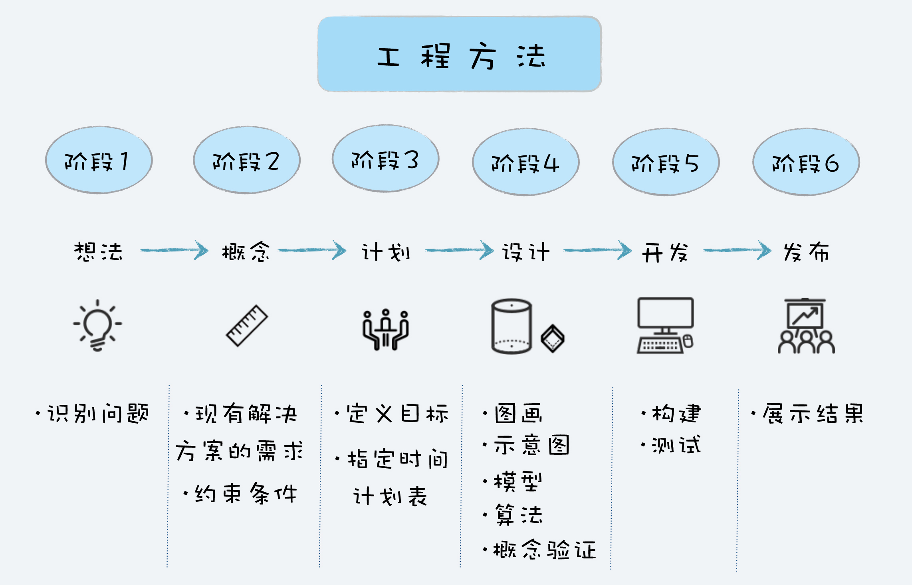

- 00 开篇词 你为什么应该学好软件工程？.md.html
- 01 到底应该怎样理解软件工程？.md.html
- 02 工程思维：把每件事都当作一个项目来推进.md.html
- 03 瀑布模型：像工厂流水线一样把软件开发分层化.md.html
- 04 瀑布模型之外，还有哪些开发模型？.md.html
- 05 敏捷开发到底是想解决什么问题？.md.html
- 06 大厂都在用哪些敏捷方法？（上）.md.html
- 07 大厂都在用哪些敏捷方法？（下）.md.html
- 08 怎样平衡软件质量与时间成本范围的关系？.md.html
- 09 为什么软件工程项目普遍不重视可行性分析？.md.html
- 10 如果你想技术转管理，先来试试管好一个项目.md.html
- 11 项目计划：代码未动，计划先行.md.html
- 12 流程和规范：红绿灯不是约束，而是用来提高效率.md.html
- 13 白天开会，加班写代码的节奏怎么破？.md.html
- 14 项目管理工具：一切管理问题，都应思考能否通过工具解决.md.html
- 15 风险管理：不能盲目乐观，凡事都应该有B计划.md.html
- 16 怎样才能写好项目文档？.md.html
- 17 需求分析到底要分析什么？怎么分析？.md.html
- 18 原型设计：如何用最小的代价完成产品特性？.md.html
- 19 作为程序员，你应该有产品意识.md.html
- 20 如何应对让人头疼的需求变更问题？.md.html
- 21 架构设计：普通程序员也能实现复杂系统？.md.html
- 22 如何为项目做好技术选型？.md.html
- 23 架构师：不想当架构师的程序员不是好程序员.md.html
- 24 技术债务：是继续修修补补凑合着用，还是推翻重来？.md.html
- 25 有哪些方法可以提高开发效率？.md.html
- 26 持续交付：如何做到随时发布新版本到生产环境？.md.html
- 27 软件工程师的核心竞争力是什么？（上）.md.html
- 28 软件工程师的核心竞争力是什么？（下）.md.html
- 29 自动化测试：如何把Bug杀死在摇篮里？.md.html
- 30 用好源代码管理工具，让你的协作更高效.md.html
- 31 软件测试要为产品质量负责吗？.md.html
- 32 软件测试：什么样的公司需要专职测试？.md.html
- 33 测试工具：为什么不应该通过QQ微信邮件报Bug？.md.html
- 34 账号密码泄露成灾，应该怎样预防？.md.html
- 35 版本发布：软件上线只是新的开始.md.html
- 36 DevOps工程师到底要做什么事情？.md.html
- 37 遇到线上故障，你和高手的差距在哪里？.md.html
- 38 日志管理：如何借助工具快速发现和定位产品问题 ？.md.html
- 39 项目总结：做好项目复盘，把经验变成能力.md.html
- 40 最佳实践：小团队如何应用软件工程？.md.html
- 41 为什么程序员的业余项目大多都死了？.md.html
- 42 反面案例：盘点那些失败的软件项目.md.html
- 43 以VS Code为例，看大型开源项目是如何应用软件工程的？.md.html
- 44 微软、谷歌、阿里巴巴等大厂是怎样应用软件工程的？.md.html
- 45 从软件工程的角度看微服务、云计算、人工智能这些新技术.md.html
- 一问一答第1期 30个软件开发常见问题解决策略.md.html
- 一问一答第2期 30个软件开发常见问题解决策略.md.html
- 一问一答第3期 18个软件开发常见问题解决策略.md.html
- 一问一答第4期 14个软件开发常见问题解决策略.md.html
- 一问一答第5期 22个软件开发常见问题解决策略.md.html
- 学习攻略 怎样学好软件工程？.md.html
- 特别放送 从软件工程的角度解读任正非的新年公开信.md.html
- 结束语 万事皆项目，软件工程无处不在.md.html
02 工程思维：把每件事都当作一个项目来推进
你好，我是宝玉。我今天分享的主题是：掌握工程思维，把每件事都当作一个工程项目来推进。
我大学学的是软件工程专业，毕业十多年后再回顾当年学的专业课，好多专业概念已经记忆模糊，唯有对一位老师的教诲记忆深刻，对我毕业后的职业生涯影响深远：
软件工程是一门用工程化方法解决软件项目问题的学科，其本质也是一门工程学科，这门课的知识在学完后，不仅可以应用在软件项目中，还可以应用于日常生活中遇到的一些问题，Everything is a project。
这句话对我影响很大。我真的开始在日常生活中尝试应用“Everything is a project”的概念，小到做作业，大到完成工作中的复杂项目。
解决这些问题的方式，就是参考软件生命周期和瀑布模型，把一件事情分成几个阶段：分析、设计、实施、测试、完成，然后制定相应的计划。这种方法不仅非常有效，让我的做事效率大幅提高，而且让我在看待事情上，能够更全面地、站在更高的角度去思考。
2010 年在上海的时候，我机缘巧合参加了一个关于产品设计与用户体验的线下活动，我可能是与会人员中，为数不多的非专业产品设计的同学。
在活动中组织者安排了一个游戏环节，每 5 个或 6 个人分成一个小组，来设计一个给老年人使用的手机，限时 30 分钟。完成后，每组选一个人上台花 5 分钟展示作品，最后投票选出做得最好的一组。
我的第一反应就是把它当作一个项目，于是快速地拟定了如下计划。
-
0~10 分钟（分析）：头脑风暴，收集想法。
-
11~15 分钟（设计）：根据头脑风暴结果，确定最终设计。
-
16~25 分钟（开发）：将想法画在纸上。
-
26~30 分钟（发布）：完善结果，准备展示。
这个计划小组成员都很认可，于是我们严格按照这个计划进行手机的设计。同时我观察了一下其他组的情况，大家都在热火朝天地讨论各种想法，似乎没有意识到时间其实是有限的。
轮到演示的时候，我们组毫无争议地拿到了第一，因为我们不仅准备充分，而且设计的手机功能完整，而其他很多组甚至还没来得及把想法完整地画下来。
什么是工程方法？
后来我才了解到，这种有目的、有计划、有步骤地解决问题的方法就是工程方法。工程方法不是软件工程独有的，几乎所有工程类别都可能会应用，例如建筑工程、电子工程等，只不过步骤可能略有不同。

工程方法通常会分成六个阶段：想法、概念、计划、设计、开发和发布。
-
想法：想法阶段通常是想要解决问题。最开始问题通常是模糊的，所以需要清晰地定义好问题，研究其可行性，检查是否有可行的解决方案。
-
概念：概念阶段就是用图纸、草图、模型等方式，提出一些概念性的解决方案。这些方案可能有多个，最终会确定一个解决方案。
-
计划：计划阶段是关于如何实施的计划，通常会包含人员、任务、任务持续时间、任务的依赖关系，以及完成项目所需要的预算。
-
设计：设计阶段就是要针对产品需求，将解决方案进一步细化，设计整体架构和划分功能模块，作为分工合作和开发实施的一个依据和参考。
-
开发：开发阶段就是根据设计方案，将解决方案构建实施。开发阶段通常是一个迭代的过程，这个阶段通常会有构建、测试、调试和重新设计的迭代。
-
发布：将最终结果包括文档发布。
如果你用这六个或者其中几个阶段对照日常工作和生活中遇到的问题，会发现绝大部分问题都可以看成一个项目，并且拆分成几个阶段，按照计划一步步完成。
站在整体而非局部去看问题
可能会有人说：“我不用这种工程方法去做事，一样可以做成呀，并没有什么区别。”确实，做一件事有很多种方式，但用工程方法去处理事情，有两点好处：
-
有一个被有效论证过的方法论指导你，可以帮助你提高成功概率，也可以提高效率。
-
当你用工程方法去思考的时候，你会更多的站在整体而非局部去思考，更有大局观。
前面提到的“设计一个老年机”的游戏就是个很好的例子，后来我在不同场合、不同人群中都组织过这个游戏，无论我如何强调时间限制（30 分钟）和产出（必须要演示结果），绝大部分人还是会把时间和注意力放在各种稀奇古怪的想法上，并沉浸其中。等到时间快到了，他们才发现还来不及把方案画到纸上，甚至还没确定该选哪个方案。
这种现象其实很常见，我们在日常处理事务时，天然地会选择自己感兴趣的、擅长的那部分，而容易无视整体和其他部分。
所以问题的核心并不在于是不是用工程方法，而是有没有把这件事当作一个项目，是不是能看到这件事的全貌，而不是只看到局部。
在工作分工越来越细致的今天，一个项目里面有产品设计、开发、测试、运维等诸多岗位，每个岗位都有自己的价值追求，测试人员关注找出更多 Bug、开发人员关注技术和高效开发功能、运维关心系统稳定。
分工带来的好处，就是复杂的任务可以分给不同的人来做，这也有助于技能的专业化，提高工作效率。但如果只站在自己的立场去考虑问题，没有人关注整体价值，就容易相互误解，产生矛盾、增加成本。
以下这些工作场景，估计你不会陌生。
-
产品经理提出一些天马行空、不切实际的需求，而技术上不可行或者实现成本很高，导致最后返工，造成资源浪费和进度延迟；
-
架构师为了满足开发上的成就感，更愿意自己“造轮子”，而不愿意采用现有开源程序或者购买合适的组件；
-
开发工程师喜欢在代码中使用各种设计模式或者最新技术，导致项目进度延迟，代码难以维护；
-
测试工程师不愿意学习自动化测试技术，导致测试周期较长，且容易出现疏漏；
-
除非产品经理特别注明，开发工程师和测试工程师不会注意用户体验上的细节。
这样的场景问题还有很多，为什么会出现这种情况呢？事实上，这在很大程度上都归因于大家只是站在自己岗位的角度来看问题，没有站在项目的整体角度来看。
如果能站在项目整体来看问题，你就会去关注项目的质量、项目的进度、项目的成本、项目的最终用户，那么上面这些场景将变成：
-
为了项目整体的效率和避免返工浪费，产品经理会及早和开发人员确认技术可行性，并对产品设计先行验证；
-
为了节约项目开发成本，提高开发效率，架构师选择成熟的架构，合理购买商业组件和使用开源程序；
-
为了提升开发效率，不影响项目开发进度，开发工程师尽可能采用成熟的技术，高效简洁地落实项目；
-
为了项目质量和效率，测试工程师学习自动化测试技术，将大部分测试变成自动化运行，极大地提高了测试效率和质量；
-
为了让用户有好的体验，不仅产品经理，每个人都会仔细体验用户界面，对于不合理的地方提出改进意见。
看起来很理想化对不对？但如果大家真能从自己做起，这样的结果并不是太难达到。
肯定有人会想，我又不是项目经理，干嘛要操这心呀？在这个问题上，我的看法是：每个项目成员，如果能多站在项目的角度去考虑，那么这样不仅对项目有利，更对自己有好处。
项目做成了，大家脸上都有光，也得到了更多的锻炼；项目没做成，不仅脸上无光，甚至可能面临丢工作的危险。很多人都有技术升管理的理想，能多站在项目整体角度去考虑的人，在日常工作中，也一定会有更多的锻炼机会，自然会多一些提升的空间。
我把这种思维方式称为“工程思维”。如果给一个定义的话，工程思维，本质上是一种思考问题的方式，在解决日常遇到的问题时，尝试从一个项目的角度去看待问题、尝试用工程方法去解决问题、站在一个整体而不是局部的角度去看问题。
在我的职业生涯中，一直习惯于用“工程思维”去思考问题，遇到问题，会尽可能把它当成一个项目，用工程方法有计划、有步骤地去解决它，这让我积累了不少的工程方法实践经验。
同时，我也更多站在整体的角度思考，这让我在项目中能更好地和其他同事合作，有更多的晋升机会。我还记得，我第一次开始管项目的时候，并没有慌张，而是把项目任务按阶段一拆分，然后按阶段制定好计划，再按照计划一点点执行、调整，很快就上手了项目管理的工作。
总结
改变，最有效的是方式是改变思想，这往往也是最难的部分。
当你开始学习这个软件工程专栏，我希望你不仅仅学到软件工程的理论知识，更希望你能用“工程思维”来思考你遇到的各类问题。
你不需要现在是一个项目经理或者管理者，也一样可以在日常生活中应用“工程思维”。比如学习这个专栏，你会制定一个什么样的计划？每个阶段达到一个什么样的成果？比如你今年有没有去旅行的计划？你会怎么制定你的旅行计划？
如果有兴趣的话，你还可以看看我以前写过的一篇文章记录下两个孩子在 MineCraft 里面还原公寓的经历。
这也是一个很有意思的工程思维实践，帮助孩子们在游戏里面还原公寓。这本质上也是一个项目，需要制定计划，需要设计、实现。我希望他们从小就有工程思维，能在未来有目的、有计划、有步骤地去解决日常生活的问题。